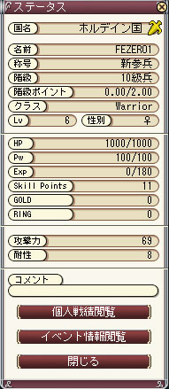

ファンタジーアースゼロの画面には様々な情報が表示されています。
表示されている情報を正しく把握し、プレイに役立てましょう。
|
|
制圧国／ フィールド名 |
現在そのフィールドを制圧している国家名とフィールド名です。 |
|---|---|---|
|
|
ゲーム内時刻 | ゲーム内での時刻になります。 |
|
|
フィールドマップ | 現在いるフィールドのマップになります。 |
|
|
ターゲットリング |
ターゲット種類や強さなどが、視覚的に表示されます。 |
|
|
サイト |
キャラクターの視点です。 このポインタを目標に合わせると、ターゲットリングが表示されます。 【Alt】キーを押すたびにサイトと羽根カーソルが切り替わります。 |
|
|
プレイヤー | 自分が操作するキャラクターです。 |
|
|
召喚カウント ウィンドウ |
現在の自軍の召喚数が表示されます。 |
|
|
チャット |
チャットの内容が表示されます。 |
| メッセージアイコン |
他のプレイヤーからメッセージが届いた際に表示されます。 フレンドリストウィンドウを開くことで確認することができます。 |
|
|
|
スキルスロット |
選択中のスキルは明るく、それ以外のスキルは暗く表示されます。 |
|
|
パーティウィンドウ |
パーティメンバーの情報が表示されます。 |
|
|
ポケット |
ポケットに設定されているアイテムが表示されます。 |
|
|
ターゲット情報 | 現在ターゲットしている対象の情報が表示されます。 |
|
|
ゲージ |
プレイヤーのHPゲージ、Pwゲージ、Expゲージ等が表示されます。 |
| メニュー | 各種ウィンドウの表示や、フィールドアウトをするためのメニューです。 |

■ ゲームパッド使用時について
ゲームパッド使用時に、設定をスキルショートカットモードにしている場合のみ、
スキルスロットのインターフェイスが変わります。
|
|
アイテム名 | 選択したアイテムの名前が表示されます。 |
|---|---|---|
|
|
アイテム |
所有するアイテムです。 カーソルを合わせることでアイテムの詳細情報が表示されます。 |
|
|
ソートボタン | アイテムを自動的に整列することができます。 |
|
|
閉じるボタン | アイテムウィンドウを閉じます。 |
■ 装備品の装備・解除
装備品をダブルクリック、又は、アイテムウィンドウ外へドロップすることで装備品の装備・解除を行うことができます。
■ アイテムを使う・捨てる
アイテムをダブルクリックすることで、アイテムを使用することができます。
また、不要なアイテムは右クリックをして表示されるメニューから「捨てる」を選ぶことで捨てることができます。
■ 右クリックメニュー
アイテムアイコンの上で右クリックをすると、アイテムの種類に合わせたメニューが表示されます。
| 装備 | 選択したアイテムを装備します。 |
|---|---|
| 外す | 選択したアイテムを外します。 |
| 捨てる | 選択したアイテムを捨てます。 |
| 使う | 選択したアイテムを使用します。 |
| 読む | 選択したアイテムを読みます。 |
| 強化 | 選択した武器・防具の装備強化ウインドウを表示します。 |
| 装備A1 | 選択したアクセサリを装備します。 |
| 装備A2 | 選択したアクセサリを装備します。 |
| ポケット1 | 選択したアイテムをポケット1にセットします。 |
| ポケット2 | 選択したアイテムをポケット2にセットします。 |
| 閉じる | 右クリックメニューを閉じます。 |
■ アイテムをポケットに装備する
ポケットにアイテムを装備しておくと、該当するショートカットキーを押すだけで簡単に使用することができます。
ポケットへの装備は以下のいずれかの方法で行うことができます。
右クリックメニューから「ポケット1」又は「ポケット2」を選択する。
ポケットにアイテムをドロップする。
習得したスキル、後に習得可能なスキルが表示されるウィンドウです。
新たなスキルを習得したり、習得済みのスキルをレベルアップしたりするにはこのウィンドウを使用します。
|
|
スキルアイコン |
スキルごとの固有のアイコンです。 未習得のスキルは暗く表示されます。 |
|---|---|---|
|
|
スキル習得／ レベルアップボタン |
SP（スキルポイント）を消費し、スキルの習得／レベルアップをすることができます。 Lv3まで取得するとMASTERと表示されます。 |
|
|
スキル情報 |
スキルの詳細情報です。 現在の状態とレベルアップ後の状態の比較、スキルを獲得するための消費SPの確認ができます。 |
|
|
所持SP | 現在所持しているスキルポイントの量です。 |
|
|
ウィンドウサイズの拡大／縮小 | スキルウィンドウのサイズを調整できます。 |
|
|
閉じるボタン | スキルウィンドウを閉じます。 |
■ スキルを習得／レベルアップする
スキルの習得／レベルアップボタンをクリックすると、スキルの習得／レベルアップを行うことができます。
その際に所持SPから消費SP分、スキルポイントを消費します。
所持SPが足りない場合はスキルの習得／レベルアップを行うことができません。
特定のスキルが一定のレベルに達すると、新しいスキルを覚えることがあります。
なお、一度スキルの習得／レベルアップしたスキルはスキルリセット（専用アイテム消費）しない限りやり直すことはできません。
■ スキルのセット／解除
習得したスキルは、スキルアイコンをダブルクリックすることでスキルスロットにセットすることができます。
セットしたスキルを外すには、外したいスキルのアイコンをダブルクリックします。
キャラクターの情報を表示するウィンドウです。
所属国や名称、パラメータなどが表示されます。

| 国名 | キャラクターの所属している国名です。 |
|---|---|
| 名前 | キャラクターの名前です。 |
| 称号 |
現在設定されている称号名です。 |
| 階級 | 現在の階級を表しています。 |
| 階級ポイント |
現在の階級ポイント／階級昇進に必要な経験値を表しています。 階級昇進に必要な階級ポイントを満たすと次のレベルに上がります。 |
| クラス | キャラクターのクラスです。 |
| Lv | キャラクターのレベルです。 |
| 性別 | キャラクターの性別です。 |
| HP |
現在のHP／最大HPを表しています。 HPが0になると倒れてしまいます。 |
| Pw |
現在のPw／最大Pwを表しています。 スキルを使用する際に消費されます。 |
| Exp |
現在の経験値／次のレベルアップに必要な経験値を表しています。 レベルアップに必要な経験値を満たすと次のレベルに上がります。 |
| Skill Points | レベルアップ時に取得したスキルポイントの合計が表示されます。 |
| GOLD | キャラクターの所持GOLD数です。 |
| RING | キャラクターの所持RING数です。 |
| 攻撃力 |
キャラクターの攻撃力です。 この値が高い程、相手に与えるダメージが上昇します。 |
| 耐性 |
キャラクターの耐性です。 この値が高い程、相手から受けるダメージが減少します。 |
| コメント |
ターゲット情報に表示されるコメントになります。 コメント欄をクリックすることで、コメント内容の編集を行うことができます。 |
| イベント名 | 現在開催中、または受取期間中のイベント名です。 |
|---|---|
| 日付 | 開催／受取期間を表示します。 |
| その他 |
イベントで取得したポイントや残りポイントなどを表示します。 |
■ 個人戦績ウィンドウ
ステータスウィンドウ内の「個人戦績一覧」ボタンをクリックすることで表示されます。
今までの戦争時・非戦争時の戦績の一覧が表示されます。
システムメニューではプレイに役立つさまざまなリストや各種ゲームの設定を行うことができます。
| 操作ヘルプ | 操作ヘルプを表示します。 |
|---|---|
| パーティ参加希望 |
パーティ参加希望アイコンの表示、または非表示を行います。 |
| 部隊リスト |
部隊リストを表示します。 （部隊所属時のみ選択可能） |
| ルール確認 | ルールの確認ができます。 |
| クエスト |
クエストウィンドウを表示します。 |
| フレンドリスト | フレンドリストを表示します。 |
| エモーションリスト |
エモーションリストを表示します。 |
| ブラックリスト | ブラックリストを表示します。 |
| サーチ |
サーチウィンドウを表示します。 |
| 大陸マップ | 大陸マップを表示します。 |
| ショートカット |
ショートカットウィンドウを表示します。 |
| オプション |
オプションウィンドウを表示します。 |
| キーコンフィグ |
マウスとゲームパッドのキー割り当ての設定をします。 |
| ログアウト | ログアウトを行います。 |
迷惑なプレイヤーをブラックリストに登録することができます。
登録することで次のような効果があります。
- 登録した相手のチャットが表示されない
- 登録した相手から自分へ、また、自分から相手へのパーティ勧誘ができない
- 登録した相手から自分へ、また、自分から相手へのトレードができない
|
|
名前入力欄 | ブラックリストに登録したいキャラクターの名前を入力する欄です。 |
|---|---|---|
|
|
登録ボタン | クリックすることで、名前入力欄に入力したキャラクターがブラックリストに登録されます。 |
|
|
登録者一覧 | 今までにブラックリストに登録したキャラクターの一覧です。 |
|
|
閉じるボタン | ブラックリストを閉じます。 |
サーチ機能を利用することで、任意の条件に合ったプレイヤーを検索することができます。
|
|
エリア |
検索したいエリアを入力します。 右の選択ボタンから指定することもできます。 |
|---|---|---|
|
|
所属国 |
検索したい所属国を選択します。 チェックの入っている国がすべて対象になります。 |
|
|
クラス |
検索したいクラスを選択します。 チェックの入っているクラスがすべて対象になります。 |
|
|
レベル |
検索したいレベルを指定します。 左の入力欄が最小値、右の入力欄が最大値になります。 |
|
|
ランク |
検索したいランクを指定します。 左の入力欄が最小値、右の入力欄が最大値になります。 |
|
|
名前 |
検索したいキャラクター名を指定します。 入力した文字を含むキャラクター全員が対象となります。 |
|
|
所属軍 |
検索したい所属軍を指定します。 戦争時以外は無所属となります。 |
|
|
サーチボタン | クリックすることで、設定した条件でサーチを開始します。 |
| 閉じるボタン | サーチウィンドウを閉じます。 |
描画やサウンドなどの設定を変更することができます。
| ガンマ調整 |
ガンマ（画面の明るさ）を設定します。 右に移動させるほど明るくなります。 |
|---|---|
| ファークリップ |
ファークリップを設定します。 右に移動させるほど遠くまで描画しますが、動作が重くなることがあります。 |
| 影表示 |
キャラクターの影表示の方法を設定します。 影を多く、詳細に表示するほど、動作が重くなることがあります。 |
| キャラクター表示 |
キャラクターの詳細モデルを表示する量を設定します。 多数にするほど動作が重くなることがあります。 |
| ステージエフェクト | 桜や雪などのエフェクトについて表示非表示を設定します。 |
| エフェクトアイテム | エフェクトの発生するアイテムの表示非表示を設定します。 |
| キャラクター情報表示 | キャラクター上部に表示されている情報の表示／非表示を設定します。 |
| NPC名表示 | NPCキャラクター上部のキャラクター名の表示非表示を設定します。 |
| パーティーポインタ | パーティメンバーの位置を表示する機能を設定します。 |
| 支配領域 境界表示 |
戦争時のミニマップにおいて、自国の領域の境界を表示するかどうかを設定します。 |
|
建築時間 アラート波紋 |
ミニマップ上の建築時間が経過したオベリスクから、波紋を表示させるかどうかを設定します。 （※ただし、ミニマップをズームアップ時は、この設定に関わらず波紋は表示されません） |
|
建築時間 アラート色 |
ミニマップ上の建築時間が経過したオベリスクの、カラーを変更させるかどうかを設定します。 |
| バリスタ可動 境界表示 |
バリスタに搭乗した際、ミニマップ上にバリスタの可動境界を表示させるかどうかを設定します。 |
| 足跡 | 水辺から出た直後や雪原仕様のマップにおける移動中の足跡について表示非表示を設定します。 |
| アイテム演出表示 | 一部の装備エフェクトを表示する対象を設定します。 |
| BGMボリューム |
BGMの音量を設定します。 右に移動させるほど音量が大きくなります。 |
|---|---|
| 効果音ボリューム |
効果音の音量を設定します。 右に移動させるほど音量が大きくなります。 |
| ボイス全体音量 | キャラクターボイスや、国王ボイスの音量を設定します。 |
| キャラクターボイス | ボイスチケットのボイス、初期設定ボイスのどちらかの再生、またはボイス再生のなしを設定します。 |
|
王様 メッセージボイス |
国王からのメッセージが表示される際に、併せてボイスを再生させるかどうかを設定します。 （※戦況報告が非表示になっている場合には国王ボイスは再生されません） |
|
範囲ごとの 音量調整 |
各対象の音量を設定します。 右に移動させるほど音量が大きくなります。 チェックを外すと対象のボイスはデフォルトとなります。 ※キャラクターボイスでカスタムを選択している必要があります。 |
|
ボイスごとの 音量調整 |
自分や他のキャラクターが行動を起こした時に、ボイス再生するかどうかを設定します。 また、ボイスチケットごとの音量も設定できます。右に移動させるほど音量が大きくなります。 |
| BGM変更 | 戦争中のBGMを切り替えることができます。 |
| マウス感度 |
マウス感度を設定します。 右に移動させるほど感度が高くなります。 |
|---|---|
| カメラモード（上下） | カメラの上下操作に対する反映方向を設定します。 |
| カメラモード（左右） | カメラの左右操作に対する反映方向を設定します。 |
|
スキルバー 詳細表示 |
スキルを選択した際の詳細表示の表示方式を設定します。 |
| ２度押しステップ | "A"又は"D"キー２度押しによるステップ操作を有効にするかどうか設定します。 |
|
自動 チャット範囲切替 |
戦争参加時に自動的にチャット範囲が変更される機能を設定します。 |
|
ランキング 自動ソート |
戦争終了時、自動でランキングをソートする機能を設定します。 |
|
ウィンドウ 変更モード |
ミニマップの位置の変更可否を設定します。 |
| アイコンチャットモード | アイコンチャットの種類の変更や使用するかどうかを設定します。 |
| マップ回転モード | プレイキャラクターが向く方角に合わせて、ミニマップが回転します。 |
| マップ拡縮スムーズ | マップの拡大・縮小時の動作を設定します。 |